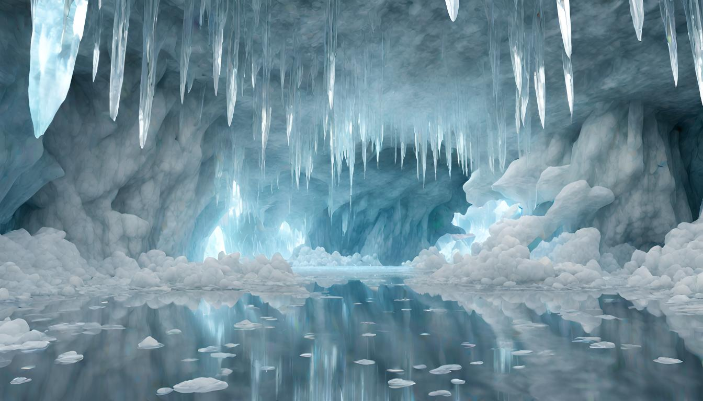
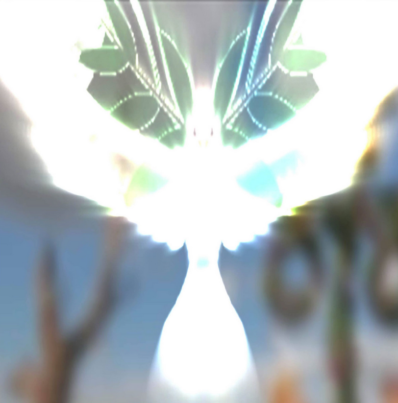
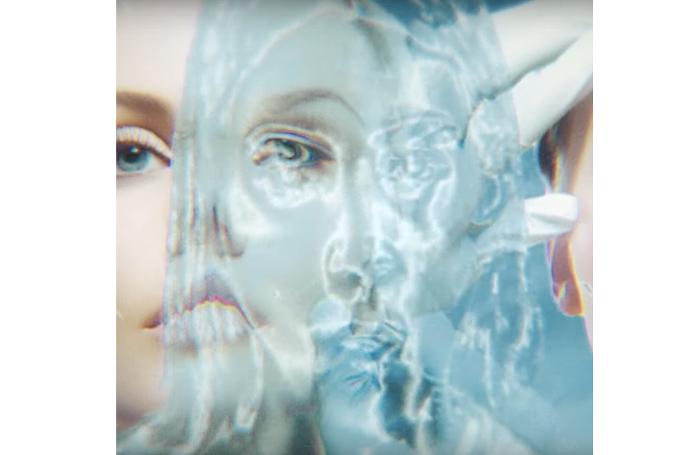
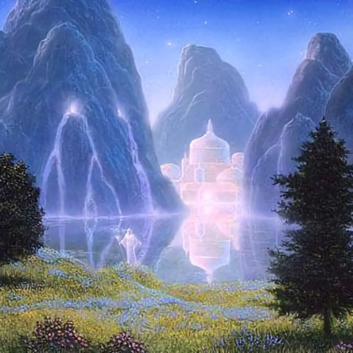
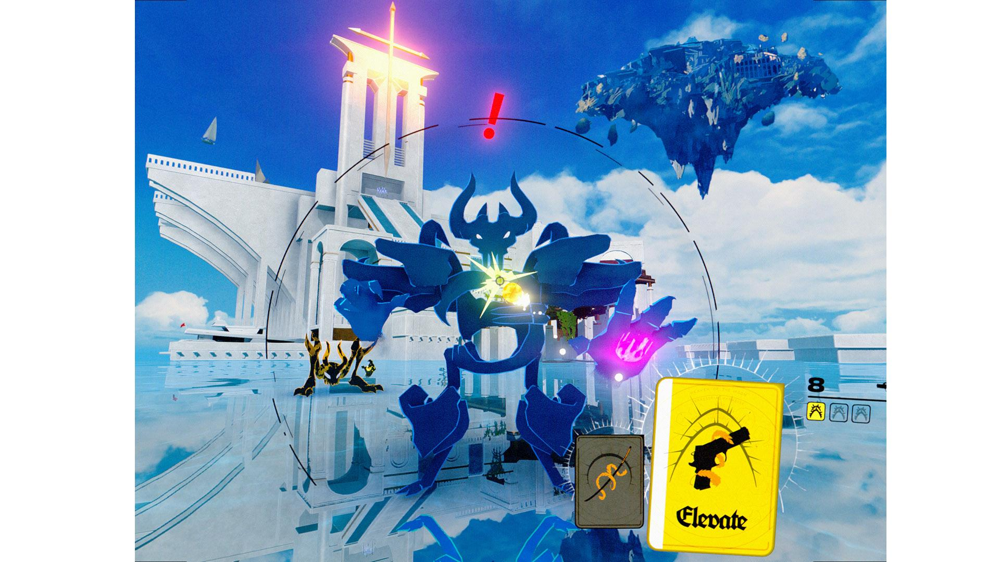
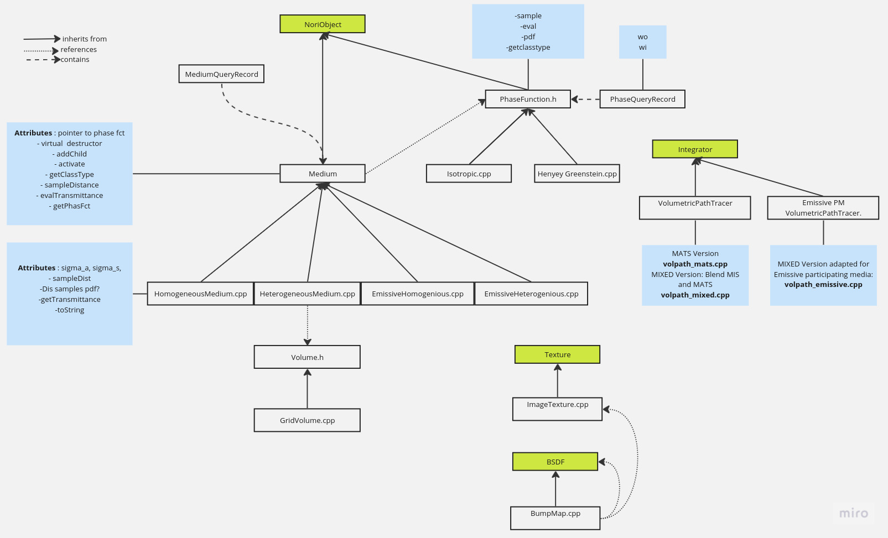

**Advanced Computer Graphics : Project Report**
Student Name: Madeleine Sandri
Legi Number: 18-823-948
# Motivation and Concept
For this years' rendering project of theme "The More You Look", I wish to focus on the subtilities of the silent ice world.

The idea behind this project is to create tools that may highlight beautiful effects in an ice cave. My goal is to create an environment that makes the viewer feel welcomed and peaceful, reminding them of natural beauty, whilst also introducing them to potential other-worldly hidden secrets. Luminous sparks will hide behind the crevices of the ice and light will descend from an opening in the cave. Hidden faces in the ice will remind us of bodily angelic like figures. In peace and in silence, subtle artifacts become apparent to us which make us think - is there more to this world than what is visible to the human eye?
# Moodboard and artistic insparation
I would like to shortly underline the aesthetics and original inspiration behind this project. The ideas and thematics explored are closely inspired by new age artists and music communities, such as the Year0001 music label based in Stockholm. They seek to gather abstract, pure and glowy visuals through world building and ambient electronic sounds, all which subtly point toward otherworldly matters (cf. Frutta E Verdura and Let Me Go singles linked below). Another inspiration is the independent video game Neon White that has pure, minimalistic graphics and a heavenly storyline which contrast with the high intensity game and fast pace breakcore music (composed by Machine Girl).
Below are a couple images that help gather this visual world.

Frutta E Verdura
(2020) single Cover by producers Whitearmor and Gud followed by a screenshot from Discovery Zone's single
Ur Eyes
(2023) music video

Cover of Let Me Go (2019) by Cartier God and Bladee followed by a screenshot from Neon White (2022)
# Implemented Features
Below are the list of features I have decided to implement for this project :
ID | Short Name |Points | Features (if required) & Comments
--------|---------------------------|-------|----------------------------------
30.1 | Heterogeneous Participating Media | 30 | Integrator : Multiple Importance Sampling Volumetric Path Tracer. Heterogenous Medium Free Path Sampling using Delta Tracking
10.7 | Emissive Participating Media | 10 | -
5.16 | Anisotropic Phase Function | 5 | Henyey-Greenstein
5.7 | Intel Denoising | 5 | -
5.3 | Images as Textures | 5 | -
5.8 | Bumb Mapping | 5 | -
Total || 60 |
Here is the Code Structure that I have implemented:

A link to each feature's implementation is available:
Finally, I used these features to construct a final scene to submit to the rendering competiton. The final image as well as details on its creation are available at the following link:
# Extra Features and Conclusion
As for features implemented that were not in my original list, I implemented an extra integrator (mixed) and used the Blender to Nori plugin to do some modelising in Blender. As I had a little previous knowledge in Blender this was not too demanding.
In conclusion, I have implemented the required features and created with my renderer a scene that relates to this year's rendering competition theme as well as my motivational image and original goals. I found this project very rewarding and look forward to further my knowledge in the world of Computer Graphics and Rendering throughout my degree.
# Sources and Bibliography
**Academic Papers**
- Simon, F. andco. "Line Integration for Rendering Heterogeneous Emissive Volumes" (2017), Wiley Online Library
- Wann Jenson, H. and co. "A Practical Model for Subsurface Light Transport" (2001), Stanford University.
**Books**
- "Physically Based Rendering, Third Edition: From Theory To Implementation" by Matt Pharr, Wenzel Jakob and Greg Humphreys. Available Online, October 2018.
**Websites and wepages**
- Mitsuba documentation and code
- Cycles Renderer documentation
- Intel® Open Image Denoise
- Mitsuba VDB to VOL Converter
- A Comprehensive Guide to Reading Binary Files in C++, The Daily Engineer (2023).
- Blender Nori Plugin
**Videos**
- Blender Guru, Reducing render times by 92%! Denoiser showdown (2019)
- Christopher O'Toole, Import and Export openVDB files in Blender!